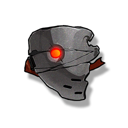

Mask of Erosion
Development Materials

Used for weapon breakthrough, Resonator ascension, and skill upgrade.
A mask of the Fractsidus's official members, due to long-term wear, the effect of its stable frequency has greatly weakened, and the pain soaked by negative emotions can be clearly felt from it.